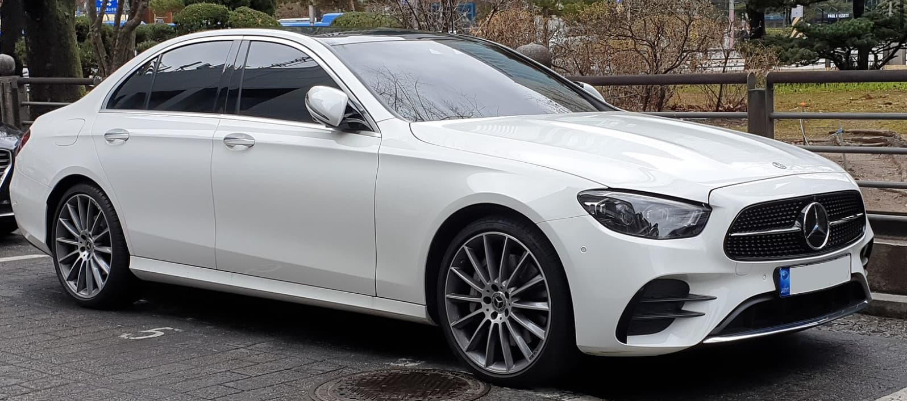
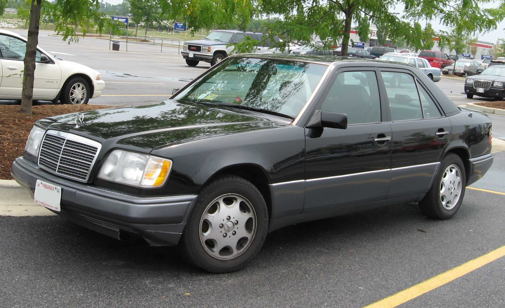
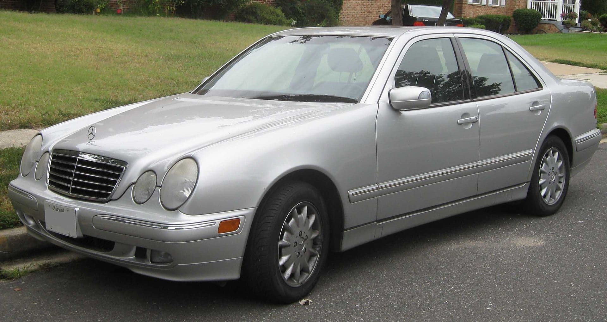
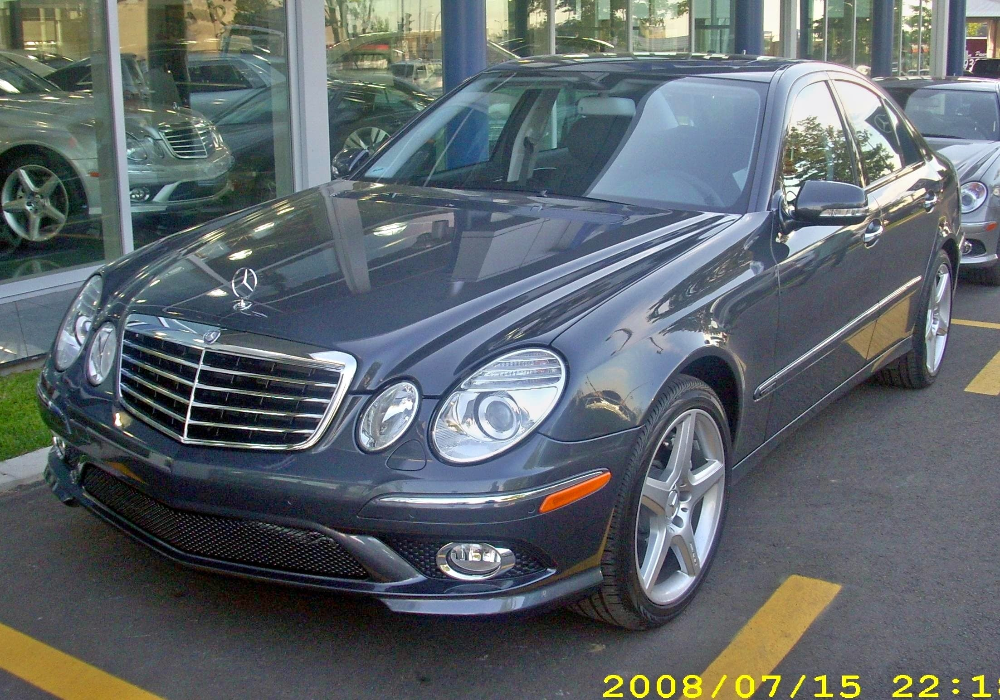
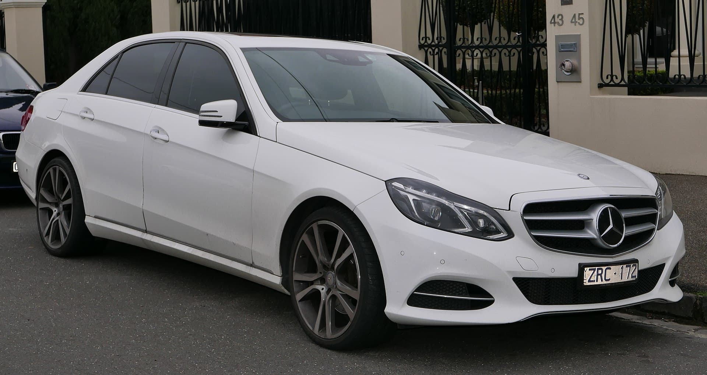
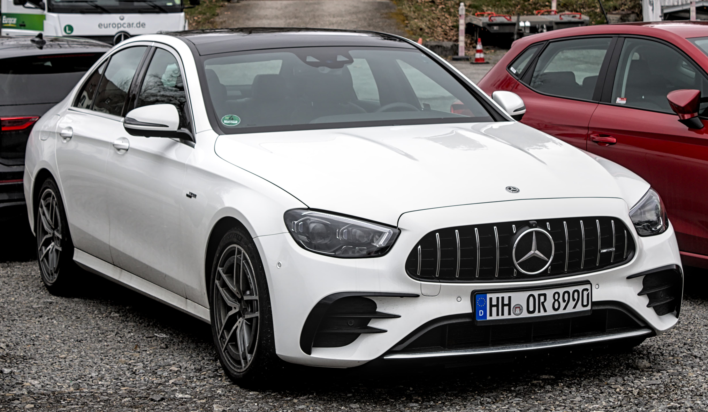
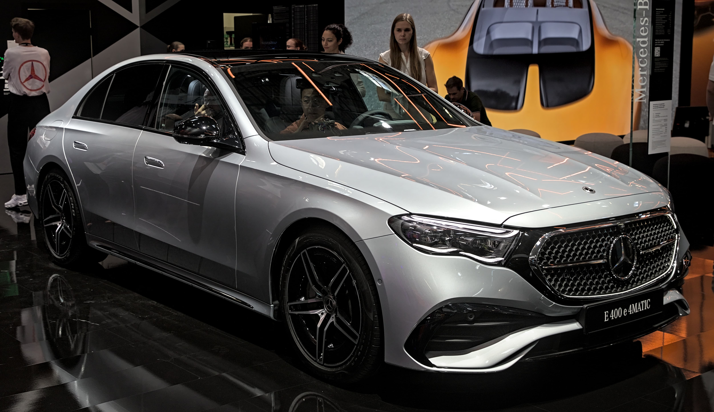

Mercedes-Benz E-Class
The Mercedes-Benz E-Class is a range of executive cars manufactured by German automaker Mercedes-Benz in various engine and body configurations. Produced since 1953, the E-Class falls midrange in the Mercedes line-up, and has been marketed worldwide across five generations. Before 1993, the E in Mercedes-Benz nomenclature was a suffix following a vehicle's model number which stood for Einspritzmotor (German for fuel injection engine). It began to appear in the early 1960s, when that feature began to be utilized broadly in the maker's product line, and not just in its upper-tier luxury and sporting models. By the launch of the facelifted W124 in 1993 fuel injection was ubiquitous in Mercedes engines, and the E was adopted as a prefix (i.e., E 220). The model line is referred to officially as the E-Class (or E-Klasse). All generations of the E-Class have offered either rear-wheel drive or Mercedes' 4Matic four-wheel drive system. The E-Class is Mercedes-Benz' best-selling model, with more than 13 million sold by 2015.[1] The first E-Class series was originally available as four-door sedan, five-door station wagon, 2 door coupe and 2 door convertible. From 1997 to 2009, the equivalent coupe and convertible were sold under the Mercedes-Benz CLK-Class nameplate; which was based on the mechanical underpinnings of the smaller C-Class while borrowing the styling and some powertrains from the E-Class, a trend continued with the C207 E-Class coupe/convertible which was sold parallel to the W212 E-Class sedan/wagon. With the latest incarnation of the E-Class released for the 2017 model year, all body styles share the same W213 platform.[2] Due to the E-Class's size and durability, it has filled many market segments, from personal cars to frequently serving as taxis in European countries, as well special-purpose vehicles (e.g., police or ambulance modifications) from the factory.[3] In November 2020, the W213 E-Class was awarded the 2021 Motor Trend Car of the Year award, a first for Mercedes-Benz.[4]
First generation (W124; 1993)
The "E-Class" name first appeared with the facelifted W124 in 1993 for the model year 1994 (the W124 was introduced in 1984 but continued with the older naming convention until 1993 when all Mercedes-Benz models switched to a new system, e.g. E 320 instead of 300 E). The diesel versions continued to be the fuel economy option over the four and six-cylinder gasoline engines, and the gasoline V8 engines (available after 1992) increased gasoline power outputs further. Four-cylinder gasoline models were not marketed in the United States. The V8-powered sedans/saloons were named 400 E/500 E from 1990 to 1993, and E 420/E 500 after 1993. Likewise, the 3.0-liter cars (e.g. 300 E) were also re-badged to E 320 with the new 3.2-liter M104 engines and naming rationalization of 1994. For the diesel models, the name change was less elegant, with the 250 D becoming the E 250 Diesel for example. Sedan (W124), Coupé (C124), Convertible (A124), and Estate (S124) body configurations were offered.
Second generation (W210; 1995)
The W210 E-Class, launched in 1995, brought the line firmly into the upper end of the mid-size luxury market. The E-class made major changes compared to the earlier version of the E-class, including four large oval headlights, which gave Mercedes an updated image intended to attract more younger buyers and women. The new E-class was 1.6 in (4.1 cm) longer and 2.3 in (5.8 cm) wider and offered significantly more interior room but was still considered mid-size.[5][6] In September 1999, the W210 E-class was facelifted. This included visual, mechanical, and quality improvements over the earlier versions. The Mercedes-Benz E-Class was Motor Trend's Import Car of the Year for 1996. While the W210 sedan was replaced by the W211 in 2002, the wagon version continued to be sold until March 2003 when the S211 wagon returned the S210 wagon.
Third generation (W211; 2002)
Launched in 2002, the W211 E-Class was another evolution of the previous model. The W211-based C219 CLS-Class 4-door coupe was introduced as a niche model in 2005, primarily to attract a younger demographic. The W211 E-Class was facelifted in June 2006 for the 2007 model year to address quality and technical issues raised by earlier models, Sensotronic was dropped, while Pre-Safe (w/o brake support) was made standard. The largest factory-built engine in the E-class range is the E500, which had its engine size increased from 5 liters to 5.5 liters in 2006 (becoming the E550) along with the facelift. There are also AMG models badged E55 and E63, AMG as well as other tuning house installations.
Sedan and wagon (W212)
The W212 replaced the W211 in 2009 (as a 2010 model). Official photos of the W212 were leaked on the internet on 9 December 2008 ahead of its 2009 Geneva Motor Show unveiling.[7] Scans of a leaked brochure were posted onto the internet in January 2009, detailing the whole E-Class range including the new E 200 CGI and E 230 CGI with direct injected forced induction engines. New features included a blind spot monitor, Lane Keeping Assist, Pre-safe with Attention Assist, and Night View Assist Plus. In the United States the E-Class was priced nearly US$4,600 less than the previous model.[8] The W212 estate was also announced and available from November 2009.[9] In 2013, the E-Class was comprehensively facelifted, featuring significant styling changes, fuel economy improvements, and updated safety features. Daimler invested close to €1 billion into the development of the extensive refresh, making it likely the most expensive mid-life facelift in the history of the automobile.[10][11] The biggest change was the singular front lights replacing the twin headlamp design (marking the end of Mercedes's dual headlamps use) with integrated LED DRLs.[12] Although not an all-new model, the W212 facelift was the only mid-cycle refresh featured on a family portrait of several generations of the E-Class side by side by Mercedes-Benz for the unveiling of the W213 E-Class.[13][14] While the factory has rated the E63S model at 577 hp/590 tq, there is significant real-world dynamometer testing that indicates the AMG-tuned S model exceeds 600 hp at the flywheel.
Fifth generation (W213; 2016)
The fifth generation E-Class was unveiled at the 2016 North American International Auto Show.[18] The next generation E-Class has design cues from the larger W222 S-Class and the smaller W205 C-Class.[19] While the W212 E-Class has tighter surface and harder edges, the new model is curvier and more flowing.[20] Engine options for the W213 E-Class saw a major update, thanks to the switch to inline-6 cylinder engines from the previous V6 engines,[21] along with a new generation of four-cylinder diesel engines, codenamed OM654, and existing four-cylinder petrol engines.[22] The W213 E-Class is the second most technologically advanced Mercedes after the new S-Class. The E-Class received the latest in autonomous driving technology for use at highway speeds, capable of piloting itself up to speeds of 130 mph (210 km/h) for up to 2 minutes. The system uses a complex array of motion sensors, radars, and cameras to scan the road ahead, and requires the driver's hands to be placed on the wheel at all times.[23][24] This feature was also available on the 4th generation Mercedes-AMG E 63 model. In 2020, Mercedes-Benz introduced a facelift to the W213.
Sixth generation (W214; 2023)
The sixth generation E-Class debuted on April 25, 2023. Starting from this generation, coupés and convertibles will no longer bear the E-Class name. E-Class and C-Class coupés and convertibles will be spun off into their own CLE vehicle.[25]
